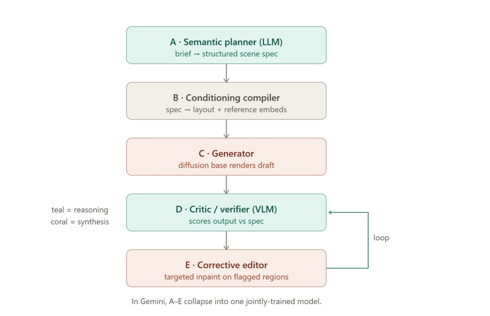
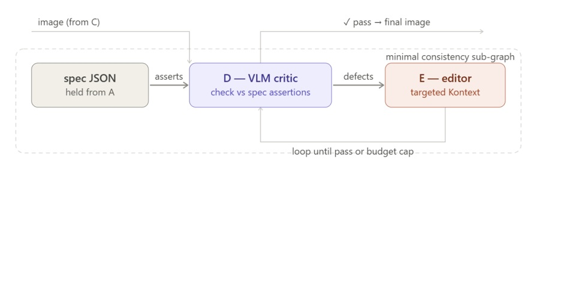

Narrazioni · Confronto · TECNICO AVANZATO
Gemini vs ComfyUI (Open source): un confronto
Un prompt di due righe su Gemini batte spesso una pipeline ComfyUI da 50 nodi costruita a mano, soprattutto nelle scene complesse e corali. Il divario non dipende dalla lunghezza del testo, ma da due meccanismi che i modelli nativamente multimodali fondono in un unico passaggio interno: l'espansione del brief in una rappresentazione latente ad alta densità — dove dettagli impliciti e personaggi secondari emergono dai prior relazionali e dalla memoria di contesto, senza bisogno di un RAG esterno — e un ciclo chiuso in cui un livello critico verifica l'immagine rispetto a una specifica mentre un editor correttivo ripara solo ciò che non torna. Questo post ricostruisce quell'architettura come grafo aperto (nodi A–E) — mostrando come pianificazione strutturata e retrieval visivo compensino in open source ciò che Gemini fa nello spazio latente — isola il sotto-grafo minimo della coerenza, spiega perché ComfyUI richiede un orchestratore Python esterno e ripercorre come ragiona il nodo critico, passo dopo passo, fino all'istruzione consegnata all'editor.
-
01
Perché un prompt breve (che chiama Google Gemini) batte una pipeline di 50 nodi
La pipeline costruita nelle prime due parti di questo corso — prima parte e seconda parte — è un grafo ComfyUI da oltre 50 nodi, con catene IP-Adapter e ControlNet e cicli di KSampler: una struttura complessa da tarare per tentativi che, pur orchestrata tramite integrazione Python, resta un generatore one-shot a catena aperta. Dare a Gemini due righe di istruzioni e un paio di immagini di riferimento produce invece stabilmente una scena più ricca e coerente rispetto al miglior flusso ComfyUI standard.
La prima mossa vincente di Gemini è trasformare il brief informale in una pianificazione strutturata prima ancora di sintetizzare un solo pixel — l'equivalente dinamico di ciò che
shots_config.pydefinisce a mano nel corso1. Quando si chiede una scena corale attorno a due personaggi ricorrenti, i 20–30 invitati secondari (con abiti, palette ed espressioni coerenti) non vengono recuperati da un database vettoriale esterno via RAG, ma emergono da tre meccanismi interni: i token di thinking e pianificazione spaziale nello spazio latente, i prior relazionali del modello sul mondo (implicit world model, che proietta lo schema dell'evento sul dominio visivo dei protagonisti) e l'attenzione diretta sui token visivi già presenti nella cronologia della chat (in-context memory).La specifica strutturata, da sola, non basta però a colmare il divario: in una pipeline diffusiva aperta, un prompt lunghissimo con 25 soggetti tende comunque a fondere gli attributi (attribute bleeding). La differenza decisiva sta uno e due passi più avanti: un nodo che verifica l'immagine renderizzata rispetto alla specifica e un nodo che ripara soltanto le regioni che non tornano.
-
02
Una ricostruzione aperta: dai nodi A → E
Gemini non espone questi passaggi come nodi separati: al suo interno, A–E collassano in un unico modello addestrato end-to-end. Ricostruita come grafo aperto — riproducibile con gli strumenti già usati nel corso (una base diffusiva, IP-Adapter/PuLID, ControlNet e un LLM/VLM esterno) — la pipeline separa ragionamento (A, D), compilazione deterministica (B) e sintesi visiva (C, E):

-
03
I cinque nodi, uno per uno (e perché Gemini vince “in blocco”)
- A — Pianificatore semantico (LLM + RAG visivo). Trasforma il brief grezzo in uno Scene Graph JSON con gerarchia dei piani, coordinate spaziali, camera, luce e ancore di stile. Qui il RAG visivo ha un ruolo concreto in open source: interroga un archivio locale (Character & Style Bank) per recuperare character sheet, palette e riferimenti multi-angolo dei personaggi ricorrenti.
- B — Compilatore di conditioning. È il nodo cerniera deterministico che traduce lo Scene Graph in tensori disaccoppiati: regional attention masking per confinare ogni descrizione alla propria bounding box ed evitare l'attribute bleeding, mappe depth/canny per la prospettiva e reference embed (IP-Adapter, PuLID, Flux Redux/Kontext) per bloccare le identità.
- C — Generatore. La base diffusiva (Flux) renderizza una bozza iniziale a partire dai segnali compilati da B, attraverso la consueta catena KSampler/VAE.
- D — Critico (VLM). Confronta la bozza con lo Scene Graph, asserzione per asserzione (conteggi, abiti, posizioni relative, testo), isolando le regioni non conformi (flagged regions) con gravità e coordinate normalizzate.
- E — Editor correttivo. Esegue un inpainting mirato (o editing con Kontext) soltanto sulle maschere segnalate da D e rimanda l'immagine a D, finché lo score supera la soglia o si esaurisce il budget di iterazioni.
Dimensione ComfyUI classico (50+ nodi) Grafo aperto (Nodi A → E) Gemini (Modello unificato) Espansione del brief Manuale o template rigido ( shots_config.py)Dinamica via LLM + RAG visivo locale (A) Interna nei token di thinking multimodale Gestione errori Rigenerazione globale (seed hunting) Riparazione locale mirata (D → E) Autocorrezione nativa nello spazio latente Costo di transizione Nessuno (flusso lineare) Serializzazione JSON + passaggi VAE encode/decode Zero (addestramento congiunto end-to-end) Controllo e debug Alto sui pesi, basso sulla semantica Massimo: spec, layout e maschere ispezionabili Basso (black-box tra prompt e output) -
04
Il sotto-grafo minimo e i due vincoli per farlo convergere
Solo tre elementi portano davvero la garanzia di coerenza: la specifica JSON prodotta da A, il nodo D e il nodo E, chiusi dall'arco di ritorno E→D. B e C determinano la qualità della prima bozza, ma una volta generata l'immagine la tenuta lungo una sequenza vive interamente dentro questo ciclo chiuso: senza specifica D non ha un contratto; senza D non si isolano le aree difettose; senza E i problemi restano irrisolti; senza back-edge manca la convergenza.
Per implementare A→E in un grafo aperto senza degradare l'immagine servono due accorgimenti ingegneristici. Primo, un contract rigoroso tra D ed E: il critico non deve restituire prosa discorsiva, ma asserzioni atomiche fallite abbinate a coordinate normalizzate
[y_min, x_min, y_max, x_max]che Python converte automaticamente in maschere sfumate (feathered masks). Secondo, una soglia di uscita a due livelli: poiché ogni passaggio in E attraversa una ricodifica VAE, oltre 2–3 iterazioni sulla stessa area compaiono micro-artefatti sui bordi; se fallisce un dettaglio locale ripara E, mentre se D rileva un errore strutturale di prospettiva o composizione conviene interrompere il loop, aggiornare il layout in B e rilanciare C. -
05
Perché ComfyUI non può eseguire questo ciclo nativamente
ComfyUI esegue l'ordinamento topologico di un grafo aciclico fisso al momento dell'accodamento: non esiste un back-edge condizionale nativo in grado di ordinare “riesegui D ed E solo se necessario”. Simulare il ciclo srotolando catene fisse (D₁→E₁→D₂→E₂…) spreca calcolo anche quando la prima bozza è già corretta e diventa ingestibile oltre due o tre passaggi.
La soluzione corretta è usare ComfyUI come puro motore GPU richiamato via API, mantenendo il ciclo
whilein Python — lo stesso schema usato dapatcher.pyesweep.pynella terza parte di questo corso. Python interroga il VLM critico, converte le coordinate delle aree fallite in maschere sfumate per l'inpainting su ComfyUI e decide autonomamente quando fermarsi. -
06
Come ragiona il nodo critico, dall'immagine all'istruzione
A ogni chiamata il nodo critico riceve insieme la specifica completa di A (il contratto) e l'immagine renderizzata (la prova). Quanto segue non è una catena di strumenti separati, ma l'unica traccia di ragionamento interna con cui D trasforma la lettura visiva in un'istruzione operativa per E.

-
07
Dalla lettura dell'immagine alla scrittura della correzione
- Tokenizzare l'immagine. L'immagine viene suddivisa in una griglia di piccoli riquadri (patch, circa 4.000–5.000 a 1 megapixel) proiettati nello stesso spazio vettoriale del testo: è ciò che permette all'attenzione del modello di confrontare direttamente i patch di un volto con la parola “donna” della specifica.
- Localizzare ogni soggetto. Il nodo critico abbina ciascuna entità della specifica ai patch con la corrispondenza più forte fino a stimarne le coordinate. Questo passaggio è più fragile su soggetti piccoli, parzialmente occlusi o descritti con concetti privi di una forma visiva univoca (“un cameriere di cinquant'anni”).
- Estrarre gli attributi reali. La difficoltà segue una gerarchia chiara: il colore emerge subito dal segnale visivo grezzo; contare istanze multiple richiede di individuarle tutte; le posizioni relative (“a sinistra di”, “dietro”) obbligano a confrontare due coordinate simultaneamente; il testo leggibile resta fragile se le lettere sono più piccole di un singolo patch.
- Confrontare osservazione e specifica. Una volta tradotto ciò che vede in descrizioni confrontabili con i vincoli di A (“vernice verde consumata” contro “il chiosco appare blu”), il modello esegue una verifica puramente linguistica, il terreno in cui è più affidabile.
- Decidere quanto pesa uno scarto. Il prompt di sistema impone una gerarchia esplicita — un errore di conteggio pesa molto più di una leggera deriva cromatica — sfruttando la capacità dei modelli più grandi di applicare griglie di valutazione coerenti. Una regola esplicita di prudenza frena inoltre l'eccesso di zelo del VLM, evitando falsi allarmi che sprecherebbero passate di riparazione.
- Disegnare il riquadro (bounding box). È lo snodo più delicato dell'intera catena: una box imprecisa fa riparare l'area sbagliata o danneggia dettagli validi vicini, ed è comunque limitata dalla risoluzione della griglia di patch. Difetti globali (come una dominante di colore) vanno segnalati a bassa gravità per impedire all'editor di ridipingere l'intera scena.
- Scrivere l'istruzione che E seguirà. Infine, D sintetizza un breve imperativo (“rimuovi la seconda figura a destra”, “ricolora il chiosco in verde scuro consumato”) abbinato alla maschera del riquadro fallito e alla descrizione originale da preservare, indirizzando l'editing solo dove serve e lasciando intatto il resto dell'inquadratura.
Tutte e sette queste letture avvengono dentro un'unica chiamata al VLM, non in sette invocazioni separate. Ripercorrerle serve a sapere dove il ciclo ha più probabilità di fallire: su soggetti piccoli o occlusi, sulle relazioni spaziali fini e soprattutto sulla precisione delle bounding box che guidano E.
-
08
Quando conviene davvero costruirlo
Per un singolo storyboard o una sequenza breve curata a mano, dove una persona rivede già ogni fotogramma e lo corregge direttamente, allestire l'intera infrastruttura A–E non ripaga lo sforzo. L'architettura diventa invece decisiva nella produzione su scala: quando una pipeline deve generare e autocorreggere molte sequenze coerenti senza supervisione umana fotogramma per fotogramma, esattamente dove i grafi ComfyUI a catena aperta smettono di scalare.
-
Vedi la terza parte di questo corso per l'elenco completo dei campi di
shots_config.py: ambiente/wall, framing, focale, angolo, oggetti, prompt positivo e negativo, e pesi per shot. La specifica interna di Gemini copre lo stesso perimetro, ma viene generata dinamicamente da un LLM anziché compilata a mano. ↩
FAQ
ComfyUI è più complesso da configurare rispetto a un prompt su Gemini? Sì: una pipeline con 50+ nodi tra IP-Adapter, ControlNet e KSampler richiede messa a punto per tentativi, mentre due righe su Gemini pianificano e rifiniscono la scena in un solo passaggio.
ComfyUI può eseguire nativamente il ciclo genera-giudica-correggi? No: esegue un grafo aciclico fisso senza un vero arco di ritorno condizionale. La soluzione pratica è gestire il ciclo while in Python richiamando l'API di ComfyUI solo sulle maschere da riparare.
Quando vale la pena costruire il ciclo aperto A–E invece di usare Gemini? Non per un progetto singolo curato a mano, dove si rivede già ogni fotogramma, ma nella produzione automatizzata su larga scala dove servono controllo granulare e autocorrezione continua.
Correlati: Cosa è ComfyUI per le basi sui nodi, e ComfyUI Storie Visive — Concetti per come il corso gestisce la coerenza senza ciclo correttivo.